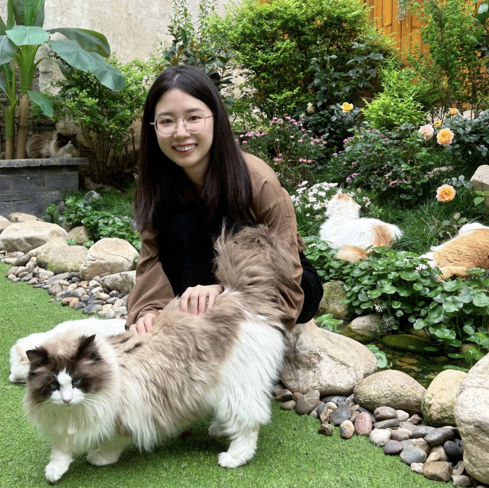

Ph.D. Student in Landscape Architecture & Environmental Planning · UC Berkeley
I am a Ph.D. student in Landscape Architecture and Environmental Planning at the University of California, Berkeley. My research focuses on how urban environments are experienced, measured, and unevenly distributed across communities.
I am especially interested in questions of urban heat, shade, vegetation, air pollution, visibility, and environmental justice. Much of my work explores how new forms of geospatial data — including LiDAR, street-view imagery, satellite observations, and mobility data — can help us better understand the everyday environmental conditions people encounter in cities.
Methodologically, I work across GIS, remote sensing, computer vision, and interpretable machine learning. My goal is to develop human-centered and spatially explicit approaches that can support more equitable, climate-responsive planning and design.
My current research brings together three interconnected directions:
Across these areas, I am interested in how spatial methods can move beyond coarse surface descriptions and better capture the environments people actually see, feel, and move through.
UC Berkeley · 2025–Present
This project develops a pedestrian-centered framework for estimating Sky View Factor (SVF) from street-view imagery and 3D reconstruction. By comparing image-based estimates with LiDAR-derived benchmarks and field validation, I aim to better represent the sky conditions people actually experience at street level.
UC Berkeley · 2024–Present
I am building workflows to process large LiDAR datasets for U.S. cities in order to extract urban-form and vegetation metrics relevant to environmental exposure. This includes generating surface models and analyzing street enclosure, canopy structure, and other three-dimensional characteristics of urban space.
UC Berkeley · 2025–Present
This work examines how conventional two-dimensional measures of urban greenness can obscure important differences in the vertical structure of vegetation. I am interested in how volumetric and pedestrian-scale measures of greenness can reveal hidden inequities in shade, cooling, and everyday environmental experience.
UC Berkeley · 2025–Present
This project explores how people experience heat not only where they live, but also through their daily movements. By integrating mobility data, urban form, and thermal conditions, I aim to develop more human-centered measures of cumulative environmental exposure.
UC Berkeley · 2024–Present
In collaboration with partners working on school environments, I analyze shade access and greening disparities across schoolyards using GIS and remote sensing. This work supports more equitable design strategies for reducing children’s heat exposure and improving outdoor environmental quality.
Email: yuyezhou@berkeley.edu
LinkedIn: yuyezhou
Google Scholar: Scholar Profile